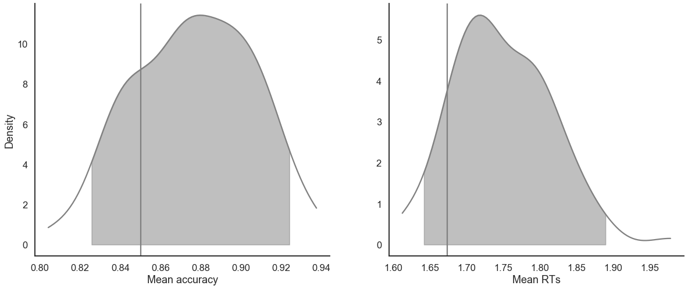
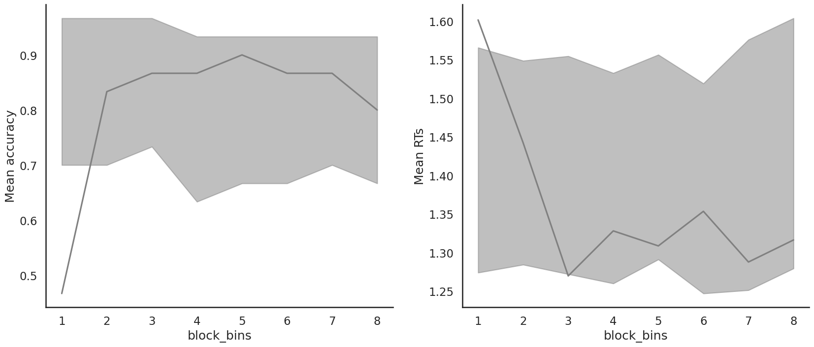
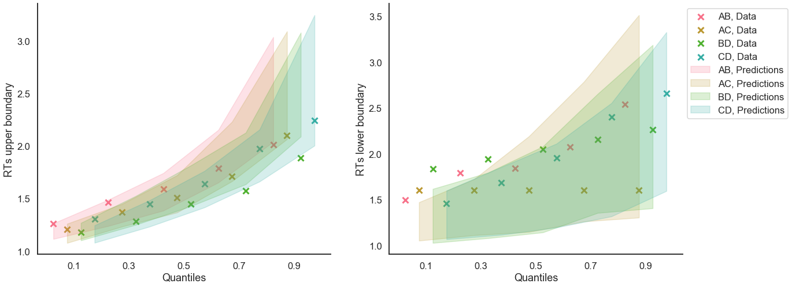

[1]:
import rlssm
import pandas as pd
import os
/Users/Khamir/opt/anaconda3/lib/python3.7/site-packages/statsmodels/tools/_testing.py:19: FutureWarning: pandas.util.testing is deprecated. Use the functions in the public API at pandas.testing instead.
import pandas.util.testing as tm
Import the grouped data¶
[2]:
par_path = os.path.abspath(os.path.join(os.getcwd(), os.pardir))
data_path = os.path.join(par_path, 'data/data_experiment.csv')
data = pd.read_csv(data_path, index_col=0)
data = data[data.participant == 20].reset_index(drop=True)
data['block_label'] += 1
data.head()
INFO:numexpr.utils:NumExpr defaulting to 4 threads.
[2]:
| participant | block_label | trial_block | f_cor | f_inc | cor_option | inc_option | times_seen | rt | accuracy | |
|---|---|---|---|---|---|---|---|---|---|---|
| 0 | 20 | 1.0 | 1.0 | 46.0 | 46.0 | 4 | 2 | 1.0 | 2.574407 | 1.0 |
| 1 | 20 | 1.0 | 2.0 | 60.0 | 33.0 | 4 | 2 | 2.0 | 1.952774 | 1.0 |
| 2 | 20 | 1.0 | 3.0 | 32.0 | 44.0 | 2 | 1 | 2.0 | 2.074999 | 0.0 |
| 3 | 20 | 1.0 | 4.0 | 56.0 | 40.0 | 4 | 2 | 3.5 | 2.320916 | 0.0 |
| 4 | 20 | 1.0 | 5.0 | 34.0 | 32.0 | 2 | 1 | 3.5 | 1.471107 | 1.0 |
Initialise the model¶
[3]:
model = rlssm.DDModel(hierarchical_levels = 1)
Using cached StanModel
[4]:
model.family, model.model_label, model.hierarchical_levels
[4]:
('DDM', 'DDM', 1)
[5]:
model.starting_point_bias
[5]:
False
Fit¶
[6]:
# sampling parameters
n_iter = 1000
n_chains = 2
n_thin = 1
# bayesian model
drift_priors = None
threshold_priors = None
ndt_priors = None
starting_point = .5
[7]:
model_fit = model.fit(
data,
drift_priors=drift_priors,
threshold_priors=threshold_priors,
ndt_priors=ndt_priors,
starting_point=starting_point,
thin = n_thin,
iter = n_iter,
chains = n_chains,
pointwise_waic=False,
verbose = False)
WARNING:pystan:Maximum (flat) parameter count (1000) exceeded: skipping diagnostic tests for n_eff and Rhat.
To run all diagnostics call pystan.check_hmc_diagnostics(fit)
Checks MCMC diagnostics:
n_eff / iter looks reasonable for all parameters
0.0 of 1000 iterations ended with a divergence (0.0%)
0 of 1000 iterations saturated the maximum tree depth of 10 (0.0%)
E-BFMI indicated no pathological behavior
get Rhat¶
[8]:
model_fit.rhat.describe()
[8]:
| rhat | |
|---|---|
| count | 3.000000 |
| mean | 1.003601 |
| std | 0.002360 |
| min | 1.001408 |
| 25% | 1.002352 |
| 50% | 1.003296 |
| 75% | 1.004697 |
| max | 1.006098 |
[9]:
model_fit.rhat.head()
[9]:
| rhat | variable | |
|---|---|---|
| 0 | 1.001408 | drift |
| 1 | 1.006098 | threshold |
| 2 | 1.003296 | ndt |
get wAIC¶
[10]:
model_fit.waic
[10]:
{'lppd': -224.53079251766346,
'p_waic': 4.584567420263923,
'waic': 458.2307198758548,
'waic_se': 35.658134283717864}
Posteriors¶
[11]:
model_fit.samples
[11]:
| chain | draw | transf_drift | transf_threshold | transf_ndt | |
|---|---|---|---|---|---|
| 0 | 0 | 345 | 0.898345 | 1.899095 | 0.904377 |
| 1 | 0 | 86 | 1.109947 | 2.010315 | 0.914344 |
| 2 | 0 | 76 | 0.883568 | 1.952430 | 0.919060 |
| 3 | 0 | 29 | 0.909259 | 2.073794 | 0.905199 |
| 4 | 0 | 271 | 0.980759 | 2.035320 | 0.921973 |
| ... | ... | ... | ... | ... | ... |
| 995 | 1 | 95 | 0.884244 | 2.103992 | 0.933621 |
| 996 | 1 | 392 | 1.060798 | 2.051015 | 0.927875 |
| 997 | 1 | 498 | 0.973864 | 2.138269 | 0.902334 |
| 998 | 1 | 371 | 0.885151 | 2.071079 | 0.911193 |
| 999 | 1 | 207 | 0.960801 | 2.028807 | 0.921436 |
1000 rows × 5 columns
[12]:
model_fit.trial_samples
[12]:
OrderedDict([('drift_t',
array([[0.89834522, 0.89834522, 0.89834522, ..., 0.89834522, 0.89834522,
0.89834522],
[1.10994672, 1.10994672, 1.10994672, ..., 1.10994672, 1.10994672,
1.10994672],
[0.88356787, 0.88356787, 0.88356787, ..., 0.88356787, 0.88356787,
0.88356787],
...,
[0.97386354, 0.97386354, 0.97386354, ..., 0.97386354, 0.97386354,
0.97386354],
[0.88515131, 0.88515131, 0.88515131, ..., 0.88515131, 0.88515131,
0.88515131],
[0.96080137, 0.96080137, 0.96080137, ..., 0.96080137, 0.96080137,
0.96080137]])),
('threshold_t',
array([[1.89909495, 1.89909495, 1.89909495, ..., 1.89909495, 1.89909495,
1.89909495],
[2.01031534, 2.01031534, 2.01031534, ..., 2.01031534, 2.01031534,
2.01031534],
[1.95243049, 1.95243049, 1.95243049, ..., 1.95243049, 1.95243049,
1.95243049],
...,
[2.13826915, 2.13826915, 2.13826915, ..., 2.13826915, 2.13826915,
2.13826915],
[2.07107864, 2.07107864, 2.07107864, ..., 2.07107864, 2.07107864,
2.07107864],
[2.02880715, 2.02880715, 2.02880715, ..., 2.02880715, 2.02880715,
2.02880715]])),
('ndt_t',
array([[0.90437705, 0.90437705, 0.90437705, ..., 0.90437705, 0.90437705,
0.90437705],
[0.91434386, 0.91434386, 0.91434386, ..., 0.91434386, 0.91434386,
0.91434386],
[0.91905996, 0.91905996, 0.91905996, ..., 0.91905996, 0.91905996,
0.91905996],
...,
[0.90233418, 0.90233418, 0.90233418, ..., 0.90233418, 0.90233418,
0.90233418],
[0.91119348, 0.91119348, 0.91119348, ..., 0.91119348, 0.91119348,
0.91119348],
[0.92143551, 0.92143551, 0.92143551, ..., 0.92143551, 0.92143551,
0.92143551]]))])
[13]:
import seaborn as sns
sns.set(context = "talk",
style = "white",
palette = "husl",
rc={'figure.figsize':(15, 8)})
[14]:
model_fit.plot_posteriors(height=5, show_intervals="HDI", alpha_intervals=.05);

Posterior predictives¶
Ungrouped¶
[15]:
pp = model_fit.get_posterior_predictives_df(n_posterior_predictives=100)
pp
[15]:
| variable | rt | ... | accuracy | ||||||||||||||||||
|---|---|---|---|---|---|---|---|---|---|---|---|---|---|---|---|---|---|---|---|---|---|
| trial | 1 | 2 | 3 | 4 | 5 | 6 | 7 | 8 | 9 | 10 | ... | 231 | 232 | 233 | 234 | 235 | 236 | 237 | 238 | 239 | 240 |
| sample | |||||||||||||||||||||
| 1 | 1.150377 | 1.091377 | 1.221377 | 1.193377 | 2.567377 | 1.573377 | 1.659377 | 2.916377 | 1.054377 | 2.604377 | ... | 1.0 | 1.0 | 0.0 | 1.0 | 1.0 | 1.0 | 1.0 | 1.0 | 1.0 | 1.0 |
| 2 | 1.143344 | 1.179344 | 1.798344 | 1.263344 | 1.146344 | 8.119344 | 1.422344 | 1.706344 | 1.361344 | 1.401344 | ... | 1.0 | 1.0 | 1.0 | 1.0 | 1.0 | 1.0 | 1.0 | 1.0 | 1.0 | 1.0 |
| 3 | 1.709060 | 1.251060 | 1.147060 | 1.372060 | 2.104060 | 1.688060 | 1.432060 | 1.383060 | 1.219060 | 2.700060 | ... | 1.0 | 0.0 | 1.0 | 1.0 | 1.0 | 0.0 | 1.0 | 1.0 | 1.0 | 0.0 |
| 4 | 2.252199 | 1.769199 | 2.181199 | 1.194199 | 3.051199 | 1.478199 | 1.832199 | 2.480199 | 1.376199 | 1.653199 | ... | 1.0 | 1.0 | 0.0 | 1.0 | 1.0 | 1.0 | 1.0 | 0.0 | 1.0 | 1.0 |
| 5 | 2.250973 | 1.096973 | 1.867973 | 1.345973 | 1.561973 | 1.185973 | 1.219973 | 2.095973 | 2.129973 | 2.314973 | ... | 1.0 | 1.0 | 1.0 | 1.0 | 1.0 | 1.0 | 1.0 | 1.0 | 1.0 | 1.0 |
| ... | ... | ... | ... | ... | ... | ... | ... | ... | ... | ... | ... | ... | ... | ... | ... | ... | ... | ... | ... | ... | ... |
| 96 | 2.044667 | 1.271667 | 1.171667 | 2.679667 | 1.670667 | 1.751667 | 1.627667 | 1.089667 | 2.006667 | 1.398667 | ... | 1.0 | 1.0 | 0.0 | 1.0 | 0.0 | 1.0 | 1.0 | 0.0 | 1.0 | 1.0 |
| 97 | 1.814151 | 1.111151 | 1.415151 | 3.180151 | 1.197151 | 2.546151 | 2.022151 | 2.045151 | 1.469151 | 2.123151 | ... | 1.0 | 1.0 | 1.0 | 1.0 | 1.0 | 1.0 | 0.0 | 1.0 | 1.0 | 0.0 |
| 98 | 1.205312 | 1.251312 | 1.424312 | 1.473312 | 1.632312 | 1.975312 | 1.104312 | 1.988312 | 1.042312 | 1.548312 | ... | 1.0 | 1.0 | 1.0 | 1.0 | 1.0 | 1.0 | 1.0 | 1.0 | 1.0 | 0.0 |
| 99 | 1.117699 | 1.492699 | 1.631699 | 1.157699 | 1.206699 | 1.519699 | 1.633699 | 1.295699 | 2.294699 | 3.597699 | ... | 1.0 | 1.0 | 1.0 | 1.0 | 1.0 | 1.0 | 1.0 | 1.0 | 1.0 | 1.0 |
| 100 | 1.920632 | 1.323632 | 1.925632 | 1.141632 | 1.587632 | 1.360632 | 2.209632 | 2.297632 | 1.146632 | 1.171632 | ... | 1.0 | 0.0 | 1.0 | 1.0 | 1.0 | 1.0 | 1.0 | 1.0 | 0.0 | 1.0 |
100 rows × 480 columns
[16]:
pp_summary = model_fit.get_posterior_predictives_summary(n_posterior_predictives=100)
pp_summary
[16]:
| mean_accuracy | mean_rt | skewness | quant_10_rt_low | quant_30_rt_low | quant_50_rt_low | quant_70_rt_low | quant_90_rt_low | quant_10_rt_up | quant_30_rt_up | quant_50_rt_up | quant_70_rt_up | quant_90_rt_up | |
|---|---|---|---|---|---|---|---|---|---|---|---|---|---|
| sample | |||||||||||||
| 1 | 0.858333 | 1.739556 | 1.815173 | 1.098077 | 1.226977 | 1.533877 | 1.770377 | 2.393977 | 1.143377 | 1.297377 | 1.523877 | 1.961877 | 2.722377 |
| 2 | 0.866667 | 1.615031 | 1.850346 | 1.225344 | 1.317844 | 1.425344 | 1.625744 | 2.088644 | 1.143544 | 1.288544 | 1.512344 | 1.713344 | 2.225344 |
| 3 | 0.837500 | 1.636093 | 1.875602 | 1.175860 | 1.272060 | 1.467060 | 1.659660 | 1.995060 | 1.156060 | 1.291060 | 1.475060 | 1.755060 | 2.471060 |
| 4 | 0.875000 | 1.784712 | 1.521978 | 1.236399 | 1.497199 | 1.842199 | 1.951599 | 2.490899 | 1.160099 | 1.344599 | 1.575699 | 1.926099 | 2.555299 |
| 5 | 0.929167 | 1.733140 | 2.113670 | 1.239573 | 1.357573 | 1.613973 | 1.867573 | 2.648173 | 1.182373 | 1.350173 | 1.558973 | 1.899773 | 2.464373 |
| ... | ... | ... | ... | ... | ... | ... | ... | ... | ... | ... | ... | ... | ... |
| 96 | 0.870833 | 1.884221 | 3.513828 | 1.147667 | 1.262667 | 1.739667 | 1.893667 | 2.646667 | 1.205667 | 1.397467 | 1.636667 | 2.096667 | 2.855067 |
| 97 | 0.891667 | 1.667376 | 2.211374 | 1.172151 | 1.295151 | 1.444151 | 1.712151 | 2.385151 | 1.141451 | 1.270951 | 1.488651 | 1.757451 | 2.499051 |
| 98 | 0.891667 | 1.701645 | 1.556469 | 1.148312 | 1.286312 | 1.490812 | 1.715312 | 3.071312 | 1.143412 | 1.345112 | 1.545312 | 1.809512 | 2.485412 |
| 99 | 0.866667 | 1.653444 | 2.355131 | 1.196499 | 1.322799 | 1.449699 | 1.658099 | 2.397399 | 1.175899 | 1.304199 | 1.486199 | 1.817499 | 2.288599 |
| 100 | 0.887500 | 1.753844 | 2.215495 | 1.093232 | 1.318232 | 1.436632 | 1.888032 | 2.542232 | 1.146032 | 1.338632 | 1.564632 | 1.816232 | 2.653032 |
100 rows × 13 columns
[18]:
model_fit.plot_mean_posterior_predictives(n_posterior_predictives=100, figsize=(20,8), show_intervals='HDI');

[19]:
model_fit.plot_quantiles_posterior_predictives(n_posterior_predictives=100, kind='shades');

Grouped¶
[20]:
import numpy as np
[21]:
data['choice_pair'] = 'AB'
data.loc[(data.cor_option == 3) & (data.inc_option == 1), 'choice_pair'] = 'AC'
data.loc[(data.cor_option == 4) & (data.inc_option == 2), 'choice_pair'] = 'BD'
data.loc[(data.cor_option == 4) & (data.inc_option == 3), 'choice_pair'] = 'CD'
data['block_bins'] = pd.cut(data.trial_block, 8, labels=np.arange(1, 9))
[22]:
data.head()
[22]:
| index | participant | block_label | trial_block | f_cor | f_inc | cor_option | inc_option | times_seen | rt | accuracy | accuracy_neg | accuracy_flipped | choice_pair | block_bins | |
|---|---|---|---|---|---|---|---|---|---|---|---|---|---|---|---|
| 0 | 0 | 20 | 1.0 | 1.0 | 46.0 | 46.0 | 4 | 2 | 1.0 | 2.574407 | 1.0 | 1 | -0.0 | BD | 1 |
| 1 | 1 | 20 | 1.0 | 2.0 | 60.0 | 33.0 | 4 | 2 | 2.0 | 1.952774 | 1.0 | 1 | -0.0 | BD | 1 |
| 2 | 2 | 20 | 1.0 | 3.0 | 32.0 | 44.0 | 2 | 1 | 2.0 | 2.074999 | 0.0 | -1 | 1.0 | AB | 1 |
| 3 | 3 | 20 | 1.0 | 4.0 | 56.0 | 40.0 | 4 | 2 | 3.5 | 2.320916 | 0.0 | -1 | 1.0 | BD | 1 |
| 4 | 4 | 20 | 1.0 | 5.0 | 34.0 | 32.0 | 2 | 1 | 3.5 | 1.471107 | 1.0 | 1 | -0.0 | AB | 1 |
[23]:
model_fit.get_grouped_posterior_predictives_summary(
grouping_vars=['block_label', 'choice_pair'],
quantiles=[.3, .5, .7],
n_posterior_predictives=100)
[23]:
| mean_accuracy | mean_rt | skewness | quant_30_rt_low | quant_30_rt_up | quant_50_rt_low | quant_50_rt_up | quant_70_rt_low | quant_70_rt_up | |||
|---|---|---|---|---|---|---|---|---|---|---|---|
| block_label | choice_pair | sample | |||||||||
| 1.0 | AB | 1 | 0.80 | 1.676127 | 1.175583 | 1.433377 | 1.271377 | 1.579377 | 1.429877 | 1.738177 | 1.909377 |
| 2 | 0.95 | 1.568144 | 2.320608 | 1.311344 | 1.316144 | 1.311344 | 1.352344 | 1.311344 | 1.537944 | ||
| 3 | 0.95 | 1.569110 | 0.895593 | 1.298060 | 1.351060 | 1.298060 | 1.546060 | 1.298060 | 1.721660 | ||
| 4 | 1.00 | 2.040449 | 1.021799 | NaN | 1.553799 | NaN | 1.933699 | NaN | 2.317299 | ||
| 5 | 1.00 | 1.790973 | 2.855367 | NaN | 1.325073 | NaN | 1.467973 | NaN | 1.922073 | ||
| ... | ... | ... | ... | ... | ... | ... | ... | ... | ... | ... | ... |
| 3.0 | CD | 96 | 1.00 | 1.967717 | 0.926563 | NaN | 1.551267 | NaN | 1.703667 | NaN | 2.328967 |
| 97 | 0.80 | 1.653751 | 0.648768 | 1.607051 | 1.216151 | 1.675651 | 1.363651 | 1.734951 | 2.084151 | ||
| 98 | 0.95 | 1.682662 | 1.047883 | 1.709312 | 1.291112 | 1.709312 | 1.545312 | 1.709312 | 1.905912 | ||
| 99 | 0.85 | 1.603949 | 1.176441 | 1.592099 | 1.356499 | 1.739699 | 1.449699 | 1.942899 | 1.638699 | ||
| 100 | 0.90 | 1.612082 | 0.859333 | 1.124432 | 1.196632 | 1.157632 | 1.587132 | 1.190832 | 1.920432 |
1200 rows × 9 columns
[24]:
model_fit.get_grouped_posterior_predictives_summary(
grouping_vars=['block_bins'],
quantiles=[.3, .5, .7],
n_posterior_predictives=100)
[24]:
| mean_accuracy | mean_rt | skewness | quant_30_rt_low | quant_30_rt_up | quant_50_rt_low | quant_50_rt_up | quant_70_rt_low | quant_70_rt_up | ||
|---|---|---|---|---|---|---|---|---|---|---|
| block_bins | sample | |||||||||
| 1 | 1 | 0.866667 | 1.899144 | 1.070049 | 1.535977 | 1.445877 | 1.636377 | 1.692877 | 1.825577 | 2.005377 |
| 2 | 0.933333 | 1.652977 | 0.763438 | 1.471044 | 1.317844 | 1.548844 | 1.656344 | 1.626644 | 1.816644 | |
| 3 | 0.833333 | 1.625860 | 1.061425 | 1.159060 | 1.301860 | 1.255060 | 1.500060 | 1.327860 | 1.860660 | |
| 4 | 0.966667 | 1.797399 | 1.597083 | 1.392199 | 1.502599 | 1.392199 | 1.646199 | 1.392199 | 1.866599 | |
| 5 | 0.833333 | 1.698373 | 1.762776 | 1.953373 | 1.289573 | 2.378973 | 1.403973 | 2.597373 | 1.619973 | |
| ... | ... | ... | ... | ... | ... | ... | ... | ... | ... | ... |
| 8 | 96 | 0.833333 | 1.755867 | 1.104029 | 1.404667 | 1.350867 | 1.632667 | 1.537667 | 1.648667 | 2.197867 |
| 97 | 0.900000 | 1.537651 | 0.734304 | 1.148351 | 1.255951 | 1.183151 | 1.490151 | 1.271151 | 1.717751 | |
| 98 | 1.000000 | 1.584012 | 0.883700 | NaN | 1.259112 | NaN | 1.465812 | NaN | 1.739712 | |
| 99 | 0.933333 | 1.644565 | 2.034486 | 2.118399 | 1.406599 | 2.510199 | 1.490699 | 2.901999 | 1.636399 | |
| 100 | 0.833333 | 1.775665 | 1.855677 | 1.663632 | 1.312632 | 1.827632 | 1.397632 | 2.264432 | 1.601632 |
800 rows × 9 columns
[25]:
model_fit.plot_mean_grouped_posterior_predictives(grouping_vars=['block_bins'],
n_posterior_predictives=100,
figsize=(20,8));

[26]:
model_fit.plot_quantiles_grouped_posterior_predictives(
n_posterior_predictives=100,
grouping_var='choice_pair',
kind='shades',
quantiles=[.1, .3, .5, .7, .9]);

Get last values for eventual further sampling¶
[27]:
sv = model_fit.last_values
sv
[27]:
| chain | draw | warmup | drift | ndt | threshold | |
|---|---|---|---|---|---|---|
| 499 | 0 | 499 | 0 | 1.043022 | 0.396829 | 2.003004 |
| 999 | 1 | 499 | 0 | 0.927147 | 0.411506 | 1.863591 |
[ ]: